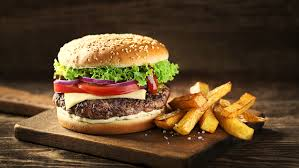

Sarmale de casa

Ingrediente pentru sarmale
1 varză murată mare
1 kg carne de porc tocată
500 g carne de porc afumată (de preferat costiță sau șorici)
200 g slănină afumată
1 ceașcă de orez
2 cepe mari
2 cești de vin alb
1 pahar bulion de roșii
3 roșii în bulion
cimbru, mărar, foi de dafin, boia, piper, sare
Pizza de casa

500 g făină
7 g drojdie uscată (sau 25 g drojdie proaspătă)
300 ml apă călduță
2 linguri ulei de măsline
1 linguriță zahăr
1 linguriță sare
200 ml sos de roșii (passata sau sos pentru pizza)
200 g mozzarella
100 g șuncă / salam / pepperoni
1 ardei gras
Cozonac pufos
500 g făină
7 g drojdie uscată (sau 25 g drojdie proaspătă)
300 ml apă călduță
2 linguri ulei de măsline
1 linguriță zahăr
1 linguriță sare
200 ml sos de roșii (passata sau sos pentru pizza)
200 g mozzarella
100 g șuncă / salam / pepperoni
1 ardei gras
Ciorba radauteana

Ingrediente Reteta gustoasa de ciorba radauteana cu piept de pui
500 gr piept pui
5 catei usturoi
2 foi dafin
3 morcovi mici
1 ceapa
1 pastrnac
1 ardei gras rosu
1 felie telina
1 pahar smantana grasa
2 galbenusuri de ou
2 linguri otet
Burrito

250 g carne tocata de vita
1 ceapa
½ lingurita chimen
200 g fasole rosie
170 g porumb
150 g orez brun
100 g cascaval
4 lipii
2 lingurite boia
Sosul rosu:
300 g pasta de tomate
120 ml apa
1 lingurita boia
½ lingurita chimen
Tacco

-4 lipii mici
-3 linguri de ketchup
-8 linguri de fulgi de porumb
-o ceapa
-150 gr de ciuperci
-cateva frunze de salata
-cateva rosii cherry
-80 gr de carnati cabanos
-4 linguri de maioneza
-sare si piper
-2 linguri de cascaval ras
Burger

500 g carne de vită tocată
4 chifle de pâine
salată verde
roșie
castravete
ceapă
puțină sare
piper negru
sos tartar
sos pentru grătar
brânză tare
HotDog

1 crenvurști cu procent ridicat de pui
1 baghetă integrală
1 lingură de Vilgain ketchup BIO
1 lingură de Vilgain muștar galben
1 lingură de legume fermentate - kimchi
ceapă verde
coriandru
chili